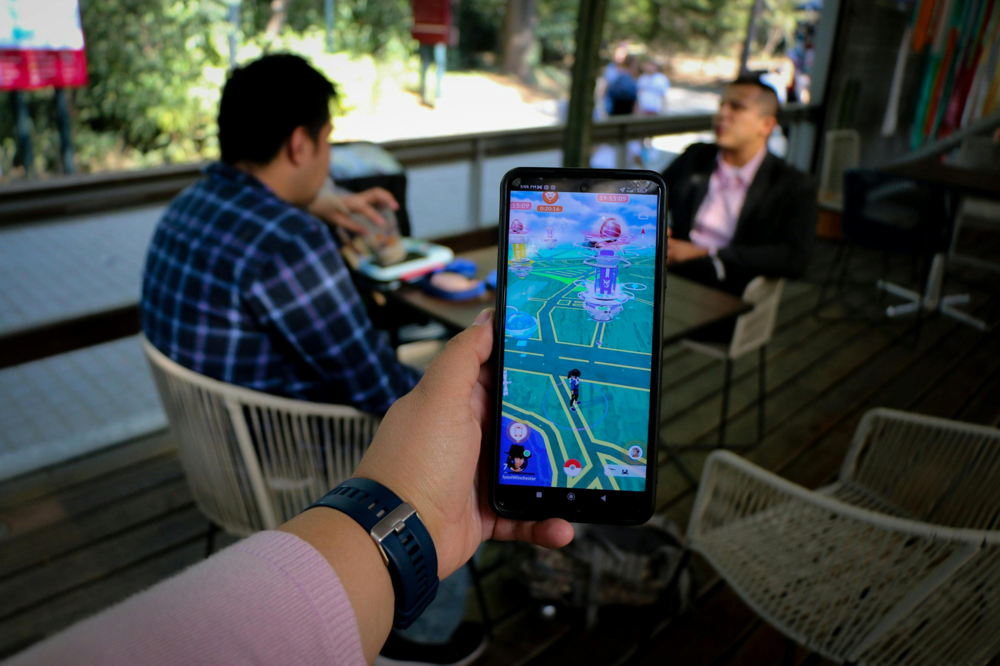
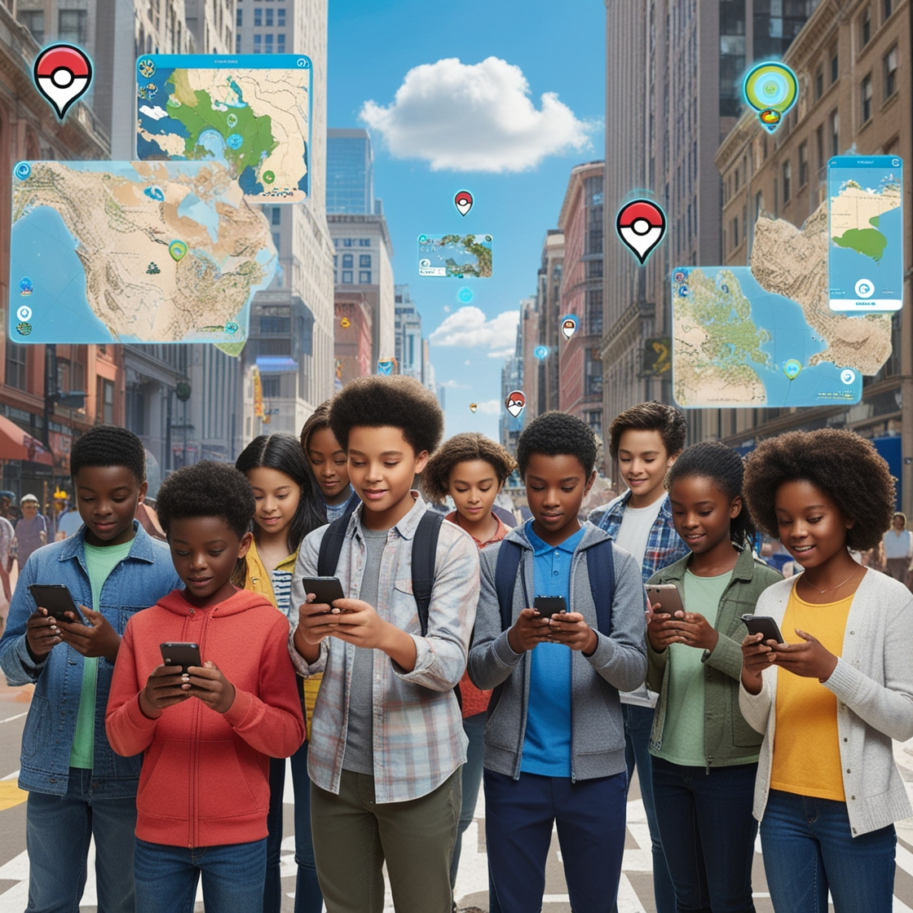
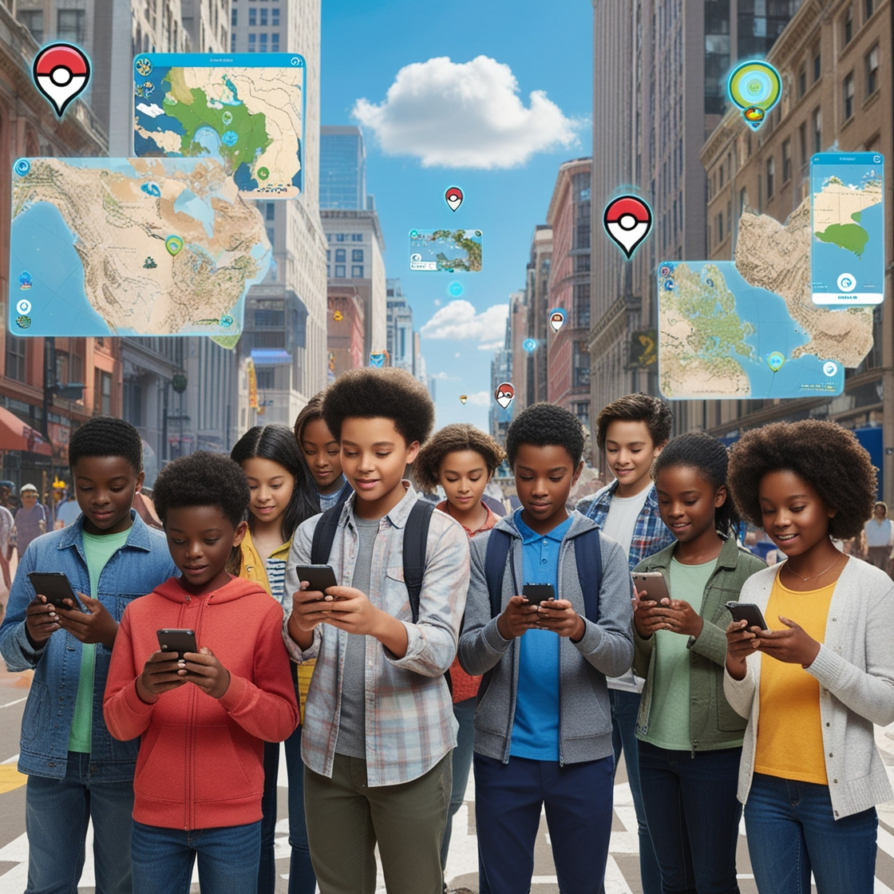
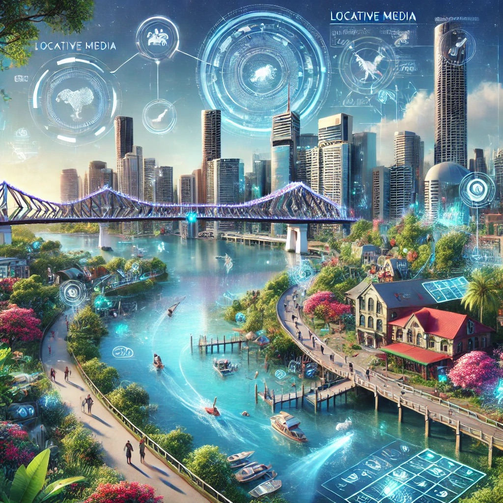

Locative Media
 


What is
What is locative media
&
How does it effect us
Locative media or location-based media (LBM) is a virtual
medium of communication functionally bound to a location.
The physical implementation of locative media, however, is not bound to
the same location to which the content refers. (Wikipedia, 2024)
Locative Media includes a range of experimental uses of geo-tech
including location-based games (Like pokemon go),
artistic critique of surveillance technologies, experiential mapping.
Location based media allows for the enhancement of any given environment
offering explanation, analysis and
detailed commentary on what the user is looking at through a
combination of video, audio, images and text.

in the future locative media will shape the world we know
with the increase of smart decives of virtual reality and other smart devices like phones
thus kind of tec is become more common